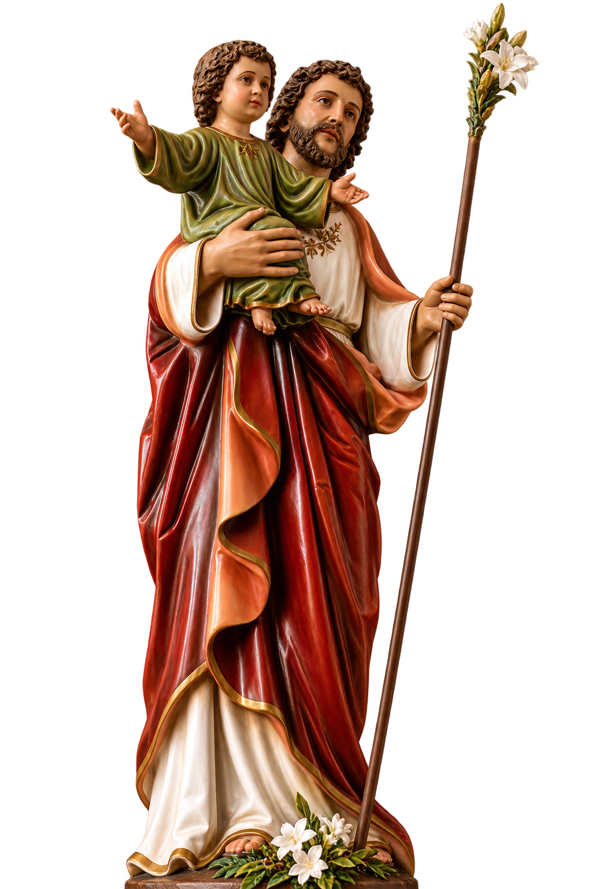
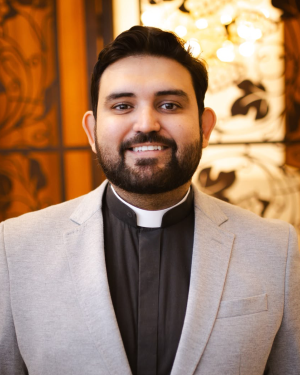

Comunidade
Paróquia Nossa Senhora do Carmo
Comunidades
Assista ao Vivo
Canal da Paróquia
Paróquia Nossa Senhora do Carmo
Acompanhe as Missas, celebrações e transmissões pelo canal oficial da paróquia no YouTube.
Ver canal no YouTubeSanta Missa votiva ao Glorioso São José
Missa dos Impossíveis

Antes da bênção final, o Santíssimo Sacramento, no ostensório, passa pelos corredores da Igreja Matriz.
Ver localizaçãoFique por Dentro
Acompanhe os próximos acontecimentos da nossa Paróquia.
Vídeos
Conheça um pouco mais da nossa Paróquia.
Nosso Pároco
Conheça o sacerdote que conduz nossa comunidade paroquial.

Pe. Artur Nelson de Oliveira
Pároco
Natural de Patrocínio/MG, Pe. Artur Nelson de Oliveira foi ordenado sacerdote em 4 de fevereiro de 2017 e atualmente exerce seu ministério como Pároco da Paróquia Nossa Senhora do Carmo, em Monte Carmelo/MG.
“Alegrai-vos sempre no Senhor!”
Fl 4,4
Pároco desde 8 de dezembro de 2021